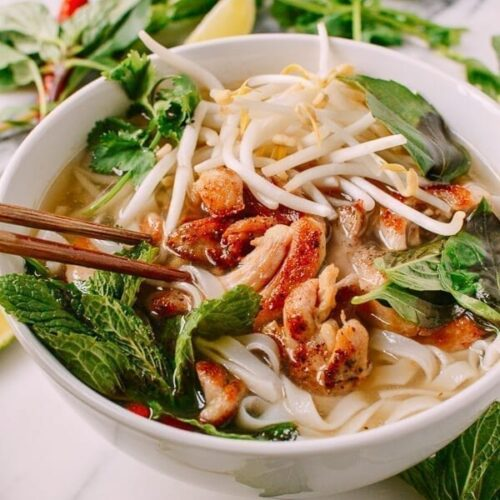

This is one of my favorite soups!!! I love going to Vietnamese restaurants,
but since I came up with this soup, we stay in!!!
Bring a large saucepan of water to a boil over high heat.
Add noodles and return water to boil. Boil until soft,
about 8 minutes. Drain and reserve noodles.
Bring chicken stock, fish sauce, garlic, ginger, lemon grass, and green onions to a boil in a large pot.
Reduce to a simmer; cook for 10 minutes. Stir in the chicken, bean sprouts, and bok choy.
Cook pho until heated through, about 5 minutes.
Divide the cooked noodles between 2 large bowls.
Pour pho over noodles; serve immediately.